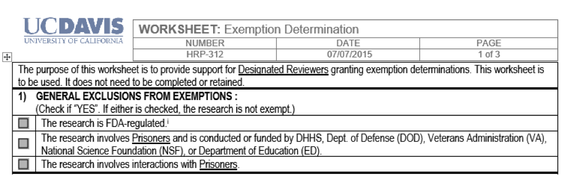
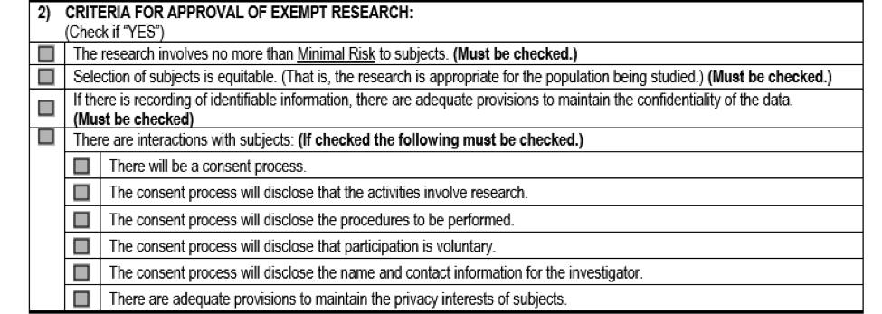
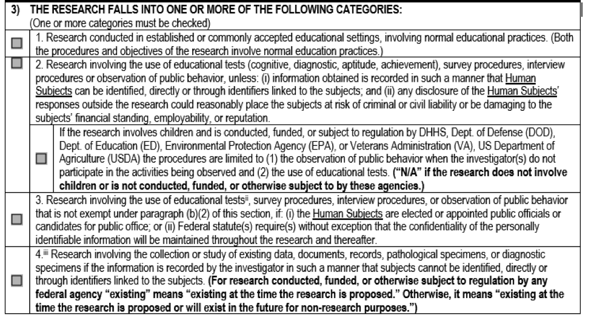
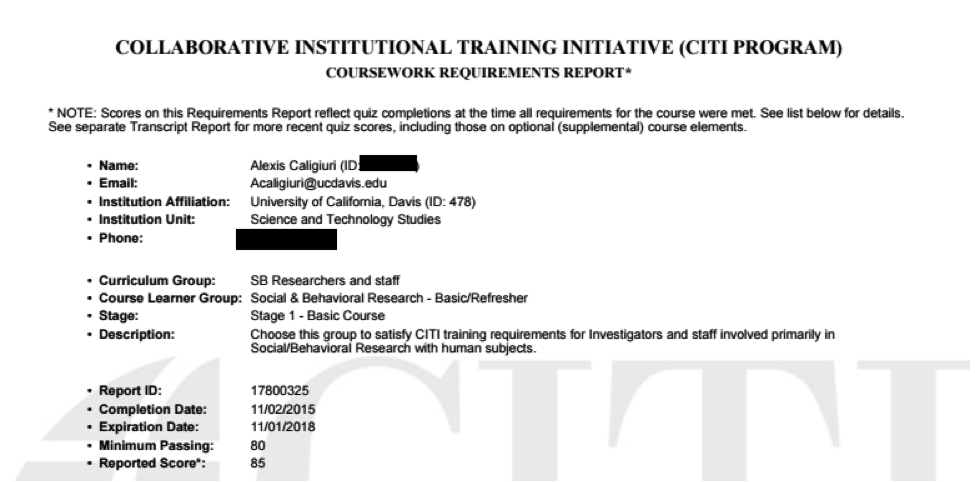
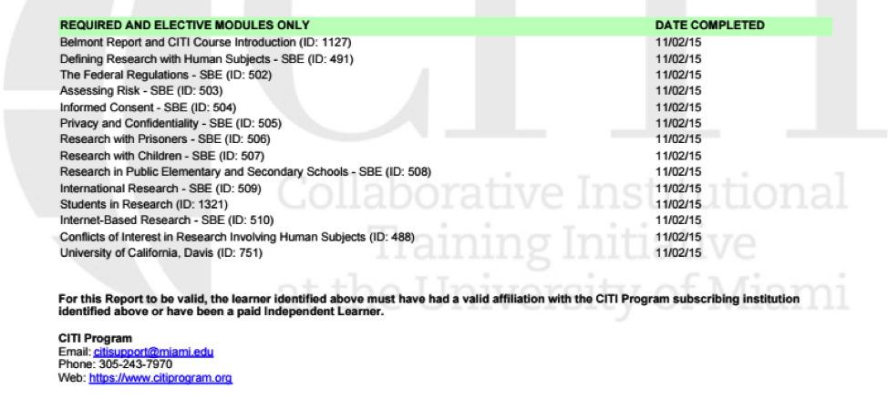
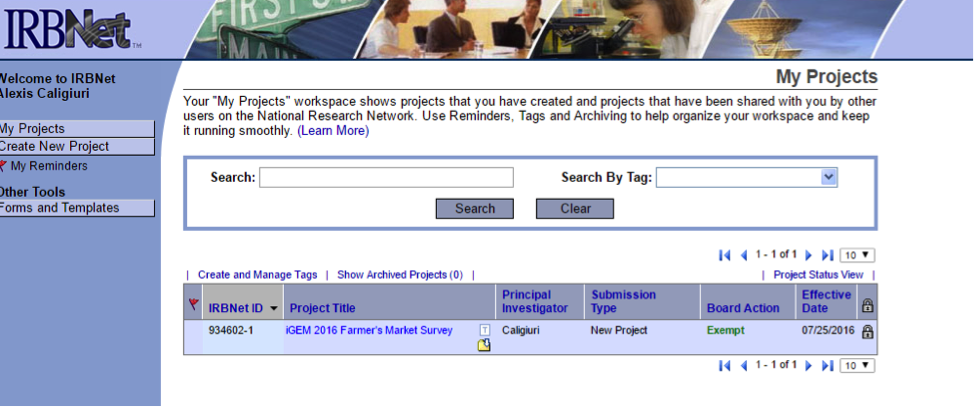

<div class="container">
	<div class="row row-centered">
		<div class="col-xs-12 col-centered">
			<h1>How to Conduct Ethical Interventions in iGEM Surveys</h1>
			<h2 class ="blue">Table of Contents</h2>
<p>Prologue: How to Perform Best Practices on your Human Practices and Accrue Useful Data</p>
<ul>
<li>What Is an Institutional Review Board and Why Does It Matter?</li>
<li>What Is Exempt from Review, and How Can My Team Comply?</li>
<li>How Else Can My Team Prepare a More Usable Survey?</li>
</ul>
<h2 class ="blue">Prologue: How to Perform Best Practices on your Human Practices and Accrue Useful Data</h2>
<p>One of the struggles of emerging technologies, like those created by iGEM teams, is that there are very few studies performed on public opinion that are tailored to our specific project. Because we are pioneers in the research, our work leads us to ask questions about possible public acceptance that have never been asked before. A common solution to this problem is to go out into the world and collect the information ourselves. This can be a great tactic to fill the gap of missing knowledge and provide crucial information for future iGEM teams. Unfortunately, there are many pitfalls to conducting proper and thorough surveys. Here is a quick and ethical guide to making surveys that adhere to best practices.</p>
<h2 class ="blue">What is an Institutional Review Board and Why Does It Matter?</h2>
<p>While most of our genetically engineered machines are not ready for human testing, many iGEM teams have been conducting human experiments without following any regulatory protocols&mdash;through surveys! In iGEM, we are often attentive to the molecular bioethics of our projects, but we need to also consider the ethics of our social scientific research.</p>
<p>Human experimentation must be ethically regulated. One place where these sorts of interventions are unlawful is in the United States.<a href="#_ftn1" name="_ftnref1">[1]</a> This is in response to a history of international<a href="#_ftn2" name="_ftnref2">[2]</a><a href="#_ftn3" name="_ftnref3">[3]</a> and domestic human rights abuses in experimentation, and a desire for a better supervisory system for bioethics.</p>
<p>Some of the most well-known violations of human rights are related to <em>physical</em> experimentation, such as the U.S. Public Health Service Syphilis Study at Tuskegee, where the public health service specifically selected black Americans, then actively misinformed the participants of the nature of the study and prevented them from receiving treatment for the disease.<a href="#_ftn4" name="_ftnref4">[4]</a> The study lasted for forty years.<a href="#_ftn5" name="_ftnref5">[5]</a> People are very aware that this kind of research must be monitored for bioethics.</p>
<p>However, there are also protections for psychological research conducted on people, because there is a history of malfeasance in psychological research as well. One well known instance is the Milgram Experiment, where Yale University Psychologist Dr. Milgram tested to see whether average people would inflict pain on strangers under orders; though the pain was not actually inflicted, the participants believed that it was, and the consent to the experiment was incomplete.<a href="#_ftn6" name="_ftnref6">[6]</a></p>
<p>The Institutional Review Board (IRB) system is chartered under Federal law and requires that all institutions performing research that is funded in whole or in part by the government submit to IRB supervision.<a href="#_ftn7" name="_ftnref7">[7]</a> Each University fulfilling this requirement has one of these boards, though their protocols vary from place to place. In this guide, we will include procedures for receiving an exemption determination from the University of California, Davis IRB and the University of California, Santa Cruz IRB, as one element of our human practices collaboration involved ensuring that both teams went through this process. Emphasis will be placed on the University of California, Davis practice, because UC Davis has a robust system and clear documentation provided at all stages so that researchers can see the underpinning rules, and we can follow my paperwork around our project from start to finish as an example.</p>
<p><strong>As you can see, IRB&rsquo;s were developed to protect human rights, pursuant to the United Nations Declaration of Universal Human Rights<a href="#_ftn8" name="_ftnref8"><strong>[8]</strong></a> and ignoring them can be very harmful, not just on a moral level, but also if your research is conducted without oversight, it may bar the entire work based on the data from publishing, and instigate disciplinary action from the university.<a href="#_ftn9" name="_ftnref9"><strong>[9]</strong></a> Some publications refuse to accept submissions containing research from studies without IRB supervision, and ongoing studies can be immediately halted by the institution.<a href="#_ftn10" name="_ftnref10"><strong>[10]</strong></a> Thus, even when the data being collected is from surveys which place the participants under minimal risk, this step of administrative approval is crucial to good scholarship.</strong></p>
<p>An important note: IRB&rsquo;s are not the end all be all for determining ethical experimentation&mdash;some very harmful experiments have passed this review. One well known example is the Stanford Prison experiment, where 24 students were arbitrarily designated as a prisoner or a prison guard,<a href="#_ftn11" name="_ftnref11">[11]</a> and experienced significant psychological disturbance during the course of the experiment.<a href="#_ftn12" name="_ftnref12">[12]</a> Dr. Zimbardo followed all necessary procedures for IRB approval at the time of the experiment,<a href="#_ftn13" name="_ftnref13">[13]</a> including consent form which can be read here: <a href="http://pdf.prisonexp.org/consent.pdf">http://pdf.prisonexp.org/consent.pdf</a>. As a researcher, you will need to have an even broader appreciation for the ethical risks of your experiment.</p>
<p>One resource to help you consider these applications beyond the purview of IRB&rsquo;s within the United States is the Presidential Commission for the Study of Bioethical Issues.<a href="#_ftn14" name="_ftnref14">[14]</a> You can find their 2010 report on Synthetic Biology here: <a href="http://bioethics.gov/synthetic-biology-report">http://bioethics.gov/synthetic-biology-report</a>.</p>
<h2 class ="blue">What Is Exempt from Review, and How Can My Team Comply?</h2>
<p>Most surveys conducted by iGEM teams are exempt from full review by the IRB. Some procedures that will likely receive exemption determinations include: &ldquo;anonymous surveys or interviews [and] passive observation of public behavior without collection of identifiers.&rdquo;<a href="#_ftn15" name="_ftnref15">[15]</a> The word exempt would seem to indicate that the principle investigator does not need to contact the Internal Review Board at all. This is not the case. What exempt means in this context is that the research will not require ongoing review. Once the protocols have been submitted, the IRB will issue an exempt determination and the researcher will not need to file any more information. But, even if this result is anticipated, the determination is CRUCIAL to the standing of the research.</p>
<p>Let&rsquo;s go through the worksheet for receiving an exemption looks like at UC Davis. You can download the form in full here: <a href="http://research.ucdavis.edu/wp-content/uploads/HRP-312-WORKSHEET-Exemption-Determination-1.docx">http://research.ucdavis.edu/wp-content/uploads/HRP-312-WORKSHEET-Exemption-Determination-1.docx</a>. To be clear, this is the form (or set of regulations) that the reviewer will be looking at to determine exemption status. That means that the protocol you write (should that be expected at your school the way it is at UC Davis) or any other measures that you fill out for the purposes of receiving and exemption will have to conform to these requirements. We will go through the page for the three most relevant sections.</p>
<p>Since these rules are founded in federal statute, the content will be similar at other US institutions, though the layout may look different. At UC Santa Cruz, for instance, there were more interactive features on the website for researchers to access. These standards are founded in bioethics on a global level and from the human dignity standards professed in the UN&rsquo;s declaration, so similar expectations are held internationally, though they may not be regulated in the same pattern as the United States.</p>
<div class="centered"></div><br>
<p>The first section lists categories that will not be able to be exempt. Your typical iGEM project human practices surveys and public outreach will likely not implicate these groups at the early stages of research that we find in the competition, but later on they may interact with FDA standards (elsewhere on our wiki the UC Davis team describes what this will look like), and certainly one can imagine circumstances where synthetic biology may be applicable to the condition of prisoners are therefore require such research. If your research does encounter these groups, then you will not be able to get an exemption. Otherwise, you can go to the next section.</p>
<div class="centered"></div><br>
<p>The second section includes protocols that must be observed in order to maintain exemption status after the exemption determination. You need to maintain ALL of these categories.</p>
<p>The first box in this section indicates that your work must present no more than <strong>minimal risk</strong>, which means that participation in the survey will incur the absolutely least amount of danger. In surveys, this can mean that if you ask questions that could be potentially dangerous to the participant if identified there are special procedures or if the questioning could result in any mental distress to the participant. A potentially dangerous question can even be just a controversial opinion, that if revealed, could place the participant in danger. A question that may trigger flashbacks or other adverse reactions can also be considered dangerous or requesting them to perform psychological tests, like word association, can breach the boundaries of minimal risk. Opinions about synthetic biology seem unlikely to cause those kinds of danger, but that doesn&rsquo;t mean that you should not be mindful about the questions which your survey asks. Special procedures if you do want to ask a question that could put the participant in harm&rsquo;s way if their participation were revealed can mean: 1) that you must either avoid collecting any personally identifiable information (or information, which in aggregate, is personally identifying) or 2) take measures to obscure personally identifying information within your database. That means that you must not include names or specific identifiers like pictures of the subjects or detailed descriptions that would allow someone to reasonably guess who the participant was. Random numbers can help keep a participants&rsquo; responses together. Our survey did not collect identifying information, nor did our questions pose a threat if the contents of the responses were released, so we heartily met the criteria for minimal risk.</p>
<p>Next, you must specify that your selection of participants is equitable for your study. This means, for instance, you cannot select or exclude participants on the basis of race is your study is not asking about race in any way. This is one of many countermeasures that evidence the history of unethical practice, as mentioned in the first section of this document regarding Tuskegee experiments. Equitable selection is separate from randomization of participants, which is a topic we will address in making for more effective research conclusions, but is not an IRB exemption requirement.</p>
<p>After, there is a requirement to responsibly store data if personally identifiable data is collected. This can include assigning random numbers to the participant&rsquo;s responses and not publishing the raw data with personally identifiable information in tact (even if it is part of an unsolicited response).</p>
<p>Finally, your consent process must disclose 1) that the activities involve research, 2) the procedures to be performed, 3) that participation is voluntary, and 4) the name and contact information for the investigator. In our case, we did not have to obtain signatures from participants, since it is exempt work (so unlike the above linked Stanford Prison Experiment, we have no signed consent forms and were not required to get them.) UC Davis&rsquo;s Research Office explains that, &ldquo;consent can be verbal, but you must provide the information to participants through an information sheet or written script.&rdquo;<a href="#_ftn16" name="_ftnref16">[16]</a> We conducted our survey verbally and through written responses.</p>
<p>This how our verbal consent disclosure script looked, with numbers matching the aforementioned standards:</p>
<p>Hi, My name is (researcher name here), and I am a student researcher at UC Davis (1). I'm studying what people think about natural, artificial, and genetically modified food products. We will ask you 14 questions, and it should take about 15 minutes (2). You don't have to participate if you do not want to, and you can leave the survey at any time (3). We will never collect any information about you, as a person-- just your perspective on these issues. The principle investigator for this project is Alexis Caligiuri, and her email address is <a href="mailto:acaligiuri@ucdavis.edu">acaligiuri@ucdavis.edu</a> (4).</p>
<p>This is what our written consent disclosure looked like:</p>
<p>This is a survey about how people feel about natural, artificial, and genetically modified foods. There are 14 questions, and it should take about 15 minutes (2). You do not have to participate if you do not want to, and you can exit the survey at any time (3). The only information collected is what you fill out here. This is a part of a research project by students at UC Davis (1). The principle investigator for this project is Alexis Caligiuri, and her email address is <a href="mailto:acaligiuri@ucdavis.edu">acaligiuri@ucdavis.edu</a> (4).</p>
<p>As you can see, all four mandatory consent disclosures were included in both versions, and iterated to all participants regardless of whether the survey was conducted verbally or through writing.</p>
<p>We suggested that UC Santa Cruz&rsquo;s team consider consent disclosures that looked like this:</p>
<p>&ldquo;Verbal:</p>
<p>Hi, My name is X, and I am a student researcher for UC Santa Cruz. I'm looking into what people think about natural, artificial, and genetically modified food products. We will ask you 10 questions, and it should take about 10 minutes. You don't have to participate if you do not want to. We will never collect any information about you, as a person-- just your perspective on these issues. The principle investigator for this project is Chase, and his email address is chase@ucsc.edu.</p>
<div class="centered"></div><br>
<p>Written:</p>
<p>This is a survey about how people feel about natural, artificial, and genetically modified foods. There are 10 questions, and it should take about 10 minutes. You do not have to participate if you do not want to. The only information collected is what you fill out here. This is a part of a research project by students at UC Santa Cruz. The principle investigator for this project is Chase, and his email address is chase@ucsc.edu.&rdquo;</p>
<p>These categories will be relevant in different circumstances to different iGEM projects. You only need to fit one category from this section to receive exemption determination if the rest of your project meets the other listed standards.</p>
<p>Category 1 would be applicable if you were handing out surveys in a college classroom. I can personally recall other students, with the professor&rsquo;s allowance, handing out short surveys to fill out at the beginning of class.</p>
<p>Category 2 is for the generation of new material (in our instance survey procedures and interview procedures). Here is when our policy of not collecting any personally identifiable information applies (see consent disclosures &ldquo;We will never collect any information about you, as a person-- just your perspective on these issues.&rdquo; and &ldquo;The only information collected is what you fill out here.&rdquo; on a page with only questions about synthetic biology opinions). And being careful when asking questions with regard to possible risks apply (see discussion of minimal risk above).</p>
<p>Category 3 is for when you formally survey public officials and is related to concerns about confidentiality.</p>
<p>Category 4 is when exploring pre-existing data that maybe have been collected with personally identifiable information. This may apply to an iGEM project going through pubmed data, and refers to necessary anonymization protocol.</p>
<p>Our project was exempt under category 2, and yours likely will be as well, as long as it is a traditional survey.</p>
<p>Though there are seven enumerated sections, it is unlikely that any after three will be relevant to an early stage iGEM public opinion survey, and therefore including them in this guide will not be particularly useful. In the interests of complete information, if your research is on children, then it may not be exempt even if everything else is in order, and the prior specifications with prisoners and food and drug research that happen to be survey like may or may not be protected. Additionally, the following activities are considered to surpass &ldquo;minimal risk&rdquo; and therefore may or may not be subject to exemption: reading/writing/drawing tasks, physical activities such as walking, sitting, or manipulating an object, computer tasks and/or internet searches, talking and/or listening to words, then making selections, or &ldquo;think-aloud&rdquo; exercises, viewing media, role-playing, completing a specific physical or mental action (&ldquo;imagining&rdquo;), passive monitoring of space (environment) with sensors, playing a game, height/weight measurements.<a href="#_ftn17" name="_ftnref17">[17]</a></p>
<p>This concludes the discussion of what an exemption requires. Now the steps required to submit the review vary by university. At UC Davis, we went through IRBnet. I made an account, and completed HRB 211 through an interactive page, and had administrative approval signed by my supervising professor and the department chair (HRB 226). I compiled the exact survey content (including verbal script and written texts), as well as a 503 Protocol were put together to present all of my materials. The complete package also had to be signed by my faculty sponsor and me.</p>
<p>My process required that I was CITI trained for Social &amp; Behavioral Research. It also required that everyone else who would directly interact with participants receive this training, which the entire iGEM team completed. My certificate looked like this:</p>
<div class="centered"></div><br>
<p>And the certifications were these:</p>
<div class="centered"></div><br>
<p>This was what was required by UC Davis though, and this specific program is not mandated by the federal statue, though some education is.</p>
<p>Many schools use IRBnet to manage interactions between researchers and the IRB. Our IRBnet account currently looks like this:</p>
<div class="centered"></div><br>
<p>Not all schools have the same system. To help UC Santa Cruz navigate their schools&rsquo;, we provided this instruction:</p>
<p>&ldquo;Santa Cruz has different IRB policies, please talk to your office-- on the website there is an exemption form that you can fill out. You should ask if there is other paperwork that you need to do-- at Davis we have several other forms.</p>
<p>https://irb.ucsc.edu/</p>
<p>https://irb.ucsc.edu/customer/portal/articles/1801393-how-to-complete-citi-training-for-human-subjects-research?b_id=2829 (VERY IMPORTANT) everyone who conducts surveys must take this. The entire UC Davis team completed this training&mdash;it takes about 90 minutes and requires an 80% correctness score to pass.</p>
<p>Choosing a PI-- this can be a student at UC Santa Cruz who has a faculty sponsor.&rdquo;</p>
<p>Generally, the best way to find out how your institution&rsquo;s IRB works is to go to the office of research website. From there they will often have resources to help you navigate the administrative world of the IRB in order to conduct your social science research under proper supervision.</p>
<h2 class ="blue">How Else Can My Team Prepare a More Usable Survey?</h2>
<p>As we have hinted at before, there are some procedures that can bias a survey.</p>
<p>One major cause of survey bias is volunteer bias. This is, to some degree, unavoidable. People who don&rsquo;t want to take your survey absolutely have the right to not to. So the people you interview may have some underlying goals which make them more likely to spend, for instance, fifteen minutes talking to you about genetic engineering. This can be a polarizing effect&mdash;only people who feel strongly one way or another want to take the time to share their reactions. However, in our data, we found that many respondents did not feel strongly, or felt that they had insufficient information to make a choice in favor or against certain precision agriculture practices.</p>
<p>Another issue is that randomization is hard to achieve. This is especially the case in internet based surveys. Sometimes one of my Facebook friends will post a survey to their page asking for responses for a class. Though this information may be subjectively useful, it is only going to reach the demographic of her friends, which may or may not be the target population. This is part of the reason why our team selected to study Farmer&rsquo;s Markets&mdash;not only were they demonstrably food conscious which makes them the population at issue with regard to food labelling standards, but also this was a self-selecting population&mdash;everyone who we could ask fits the parameters of the people we seek to ask. A survey posted to Facebook friends when one is trying to, for instance, gain information about a broader group than just one&rsquo;s friends, is a flawed design.</p>
<p>Finally, small sample sizes can eschew results. The lower limit to find statistically significant data tends to be around thirty responses. Barring other flaws that can prejudice data, simply having too few responses can make your survey inadequate for finding statistically meaningful work. Between our survey data and the data generated through our collaboration with UC Santa Cruz directed by their Principle Investigator Chase Armer, we collected almost fifty responses. While statistical results from this are not quite as dynamic as they might be with a larger sample size, like Consumer Reports 2015 survey data on shoppers&rsquo; &ldquo;naturalness&rdquo; in food concerns, we also recorded other comments given by the respondents, offering a broader range of feedback and supplying more context for their opinions on naturalness.</p>
<p>Now you are ready to go forth and conduct a meaningful and ethically sound survey to answer the novel public opinion questions that your pioneering research conjures up!</p>
<p><a href="#_ftnref1" name="_ftn1">[1]</a> 45 C.F.R. 46 &sect; 46.101.</p>
<p><a href="#_ftnref2" name="_ftn2">[2]</a> https://www.ushmm.org/wlc/en/article.php?ModuleId=10005168</p>
<p><a href="#_ftnref3" name="_ftn3">[3]</a> Kim, W. O. (2012). Institutional review board (IRB) and ethical issues in clinical research. <em>Korean Journal of Anesthesiology</em>, 62(1), 3&ndash;12. http://doi.org/10.4097/kjae.2012.62.1.3</p>
<p><a href="#_ftnref4" name="_ftn4">[4]</a> http://www.cdc.gov/tuskegee/timeline.htm</p>
<p><a href="#_ftnref5" name="_ftn5">[5]</a> Id.</p>
<p><a href="#_ftnref6" name="_ftn6">[6]</a> Kim, W. O. (2012). Institutional review board (IRB) and ethical issues in clinical research. <em>Korean Journal of Anesthesiology</em>, 62(1), 3&ndash;12. http://doi.org/10.4097/kjae.2012.62.1.3</p>
<p><a href="#_ftnref7" name="_ftn7">[7]</a> 45 C.F.R. 46.</p>
<p><a href="#_ftnref8" name="_ftn8">[8]</a><a href="http://www.un.org/en/universal-declaration-human-rights/">http://www.un.org/en/universal-declaration-human-rights/</a> (at Article 1)</p>
<p><a href="#_ftnref9" name="_ftn9">[9]</a> https://www.irb.cornell.edu/documents/Studies%20without%20IRB%20Approval.pdf</p>
<p><a href="#_ftnref10" name="_ftn10">[10]</a> Id.</p>
<p><a href="#_ftnref11" name="_ftn11">[11]</a> http://www.prisonexp.org/setting-up</p>
<p><a href="#_ftnref12" name="_ftn12">[12]</a> http://www.prisonexp.org/conclusion</p>
<p><a href="#_ftnref13" name="_ftn13">[13]</a> http://www.prisonexp.org/faq</p>
<p><a href="#_ftnref14" name="_ftn14">[14]</a> http://www.bioethics.gov/</p>
<p><a href="#_ftnref15" name="_ftn15">[15]</a> http://research.ucdavis.edu/policiescompliance/irb-admin/researchers/review-by-the-irb/#Do I need to submit my project to the IRB for review</p>
<p><a href="#_ftnref16" name="_ftn16">[16]</a> http://research.ucdavis.edu/policiescompliance/irb-admin/researchers/review-by-the-irb/#Do I need to submit my project to the IRB for review</p>
<p><a href="#_ftnref17" name="_ftn17">[17]</a><a href="http://research.ucdavis.edu/wp-content/uploads/HRP-312-WORKSHEET-Exemption-Determination-1.docx">http://research.ucdavis.edu/wp-content/uploads/HRP-312-WORKSHEET-Exemption-Determination-1.docx</a></p>
		</div>
	</div>
</div>